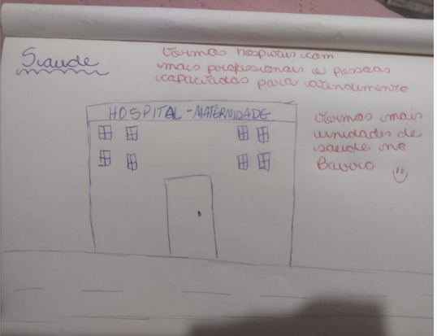
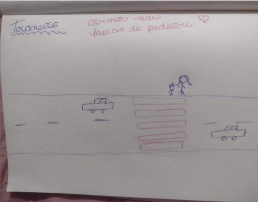
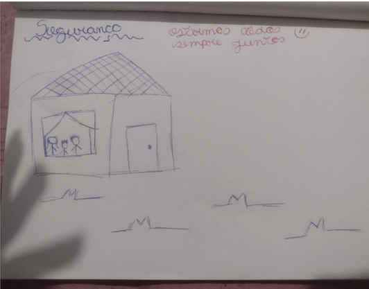

“Precisamos de atendimento mais rápido, pediatria e especialistas.”
Síntese temática das respostas abertas.
Desenhos, falas, pesquisas e experiências territoriais como parte do diagnóstico do PMPI.
A pesquisa consolida percepções sobre saúde, educação, proteção, mobilidade, lazer e convivência familiar.
As produções infantis revelam demandas concretas relacionadas à saúde, ao trânsito seguro, à proteção e ao cuidado no território.



“Precisamos de atendimento mais rápido, pediatria e especialistas.”
Síntese temática das respostas abertas.
“A escola precisa continuar acolhedora, com apoio e atendimento especializado.”
Síntese temática das respostas abertas.
“Queremos lugares seguros, limpos e próximos de casa para brincar.”
Síntese temática das respostas abertas.
“O trabalho longe e o transporte diminuem o tempo com as crianças.”
Síntese temática das respostas abertas.